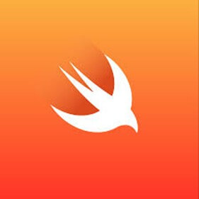

10 Best Programming Language to Learn in 2018
With time old programming languages become obsolete while new programming languages are launched, but they never gain traction. A common question amongst beginners (and coders alike) is the programming language they should invest learning in, that is in demand, stable outlook, and plenty of jobs.Here, is a list of top 10 languages that you should learn
1. Python

Created: Python language developed by Guido van Rossum. It was first released in 1991.
Pros:
- Supports multiple systems and platforms
- Object-Oriented Programming (OOPs) driven.
- Helps to improve Programmer's Productivity
- Allows you to scale even the most complex applications with ease
- Extensive Support Libraries
Cons:
- Note ideal for Mobile Computing
- Python's database access layer is bit underdeveloped and primitive.
Usage/Application: Web and Internet Development, Scientific and Numeric applications, Desktop GUIs, Business applications. It is widely used in AI and Machine Learning space.
Salary: An average salary for any Python developer in United State is $114,383 per year.
Learning Difficulty: Easy
Reason Selected: Machine Learning, AI, and Data Science are emerging fields and Python is a staple programming language in such software programs.
2. Java

Created: James Gosling primarily designed Java at Sun Microsystems in the year 1996
Pros:
- Object- Oriented language
- Java offers APIs for different activities like Database connection, networking, XML parsing, utilities, etc.
- Powerful open source Rapid Development tools
- A large number of open source libraries
Cons:
- Memory management in Java is quite expensive
- The absence of templates can limit you to create high-quality data structures.
Usage/Application: Java mostly used for developing Android apps, web apps, and Big data.
Salary: An average salary for any Java developer in United State is $101,013 per year.
Learning difficulty: Learning Java is simple and easy.
Reason Selected: Java has wide and growing adoption. There is and will never be a shortage of jobs requiring Java Skills.
3. R

Created: R was designed by Robert Gentleman and Ross Ihaka at the University of Auckland. This project was conceived in 1992, but it's initial version released in 1995 and a stable beta version in 2000.
Pros:
- R is a comprehensive statistical analysis language which encourages you to develop new ideas
- As a statistical language which is considered to be very easy to code
- R is open-source software. Therefore, anyone can use and change it
- R is good for GNU/Linux and Microsoft Windows.
- R is cross-platform which means it can seamlessly run on different operating systems.
Cons:
- In R, quality of some packages is not up to the mark
- R does not have the best memory management. Therefore, it may consume all available memory.
Usage/Application: Data Science projects, Statistical computing, Machine learning
Salary: An average wage for any R developer ranges from approximately $90,042 to $136,616 per year
Learning difficulty: Hard
Reason Selected: Data Sciences is a booming field and R is primarily used for Data Analysis.
4. Javascript

Created: JavaScript was earlier called LiveScript when it first shipped in with Netscape Navigator 2.0 in September 1995. Later, it was renamed as a JavaScript.
Pros:
- Client-side JavaScript is very fast as it can be run quickly in the client-side browser
- JavaScript is relatively simple to learn.
- It can work smoothly with other languages and can be used in a huge variety of applications.
- Grease monkey support to write snippets of JavaScript which can execute on specific web pages
Cons:
- JavaScript only allows single inheritance, so multiple inheritances are not possible
- No copy or equal method is available in JavaScript.
- JavaScript interpreted differently by different browsers.
Usage/Application: JavaScript usage include web/mobile app development, game development, and desktop app development.
Salary: An average wage for Javascript developer in the United States is around $110,981 per year
Learning difficulty: Easy
Reason Selected: With NodeJS JavaScript now supports Server-Side Scripting as well. JavaScript is an indispensable language there will always be a need for JS skills.
5. Swift
Created: Swift was developed by Apple in July 2010 so that iOS developers do not need to work with Objective-C.
Pros:
- The Swift program codes are near to natural English, so it is easy to read
- Easy to add new features to this language which makes swift high- level language
- The language does not have long code line.
- Automatic Memory Management feature prevents the memory leaks.
Cons:
- With the continues updating of swift versions of Apple, Swift is somewhat unstable
- As it is a new programming language the pool of Swift developers is very limited
Usage/Application: Swift is specially designed language which works with Apple's Cocoa and Cocoa Touch frameworks to create all types of iOS apps.
Salary: An average salary for iOS developer in the United States is around $130,801 per year
Learning difficulty: Easy
Reason Selected: Apple! Should we say more?
6. C++
Created: C++ is a programming language that was developed by Bjarne Stroustrup in 1983.
Pros:
- It is a popular language, and thus, there are many compilers and libraries
- Other programming languages like C, C#, and Java have very similar syntax to C++, make it easy to learn for everyone who knows C++.
- No garbage collector is running in the background.
Cons:
- The syntax is complex, and the standard library is small, making this language very difficult to learn for the beginner programmer.
- C++ program can't support garbage collection or Dynamic Memory Allocation
- The object orientation system in C++ is unnecessarily basic compared to other languages.
Usage/Application: C++ is widely used in Game Development, Advance Computations, and Graphics Compilers
Salary: The average salary of C++ developers in the United States is $113,865 per year.
Learning difficulty: Hard
Reason Selected: C++ is robust language and is widely used in diverse fields. Will never go out of fashion
7. C#

Created: C# is a computer programming language. It's the first version released in 2001.
Pros:
- C# uses almost similar syntax which follows by C so it easy to understand for those who know C language
- Easy Integration with Windows
- Fully integrated with the .NET library which provides access to a repository of functionality and support.
- Safer than its namesakes (C/++) as pointer types are not permitted
Cons:
- It allows pointers in 'unsafe' blocks
Usage/Application: Widely used in Enterprise Cross-Applications Development, Web Applications
Salary: The average salary for "C# developer" ranges from $66,493 per year to $101,775 per year
Learning difficulty: Hard
Reason Selected: Widely used in Enterprise software and the skill is in demand.
8. PHP

Created: Rasmus Lerdorf created PHP in 1994
Pros:
- Running with PHP is simple
- Functional and Object-Oriented Programming
- Large Open Source Software Community
- A reasonably good system of automation tools available for testing and deploying
Cons:
- Error handling facility is poor as PHP lacks debugging tool
- PHP is not secure as it is one of the open source languages
- Developing a website with PHP Web Development is slower than other programming languages.
Usage/Application: Web Applications, Content Management Systems, eCommerce Applications
Salary: The average salary for a PHP Developer in the US is $84,727 per year
Learning difficulty: Easy
Reason Selected: Most popular scripting language. WordPress, Facebook all created using PHP. Never a shortage of PHP jobs.
9. SQL
Created: SQL was developed at IBM by Donald D. Chamberlin and Raymond F. Boyce. This language was made available publicly in 1979.
Pros:
- Powerful query language
- Optimised for large numbers of table rows
- Fast for searching and querying of data
- High availability and consistency of data
- Fast for retrieving data from multiple tables
Cons:
- Difficult to convert data from Objects into database tables
- It can only run on the single server, so increasing speed means upgrading hardware.
- As SQL databases run on a single server so in case if the server stop working, then the database shouldn't be accessed
Usage/Application: Used in Any Databases
Salary: The average salary earned by SQL Developer is $84,792 per year in the United States
Learning difficulty: Easy
Reason Selected: You need to know database and SQL irrespective of what profile/language chose as a software developer.
10. Go

Created: Go language which is also known as golang is developed at Google in 2009 by Robert Griesemer, Ken Thompson, and Rob Pike
Pros:
- Go is a really fast language as it is compiled to machine code
- Its syntax is small compared to other languages, and it's easy to learn.
- Offers standard library to provide handy built-in functions for working with primitive types
- Go makes current programming easy.
Cons:
- Poor Library Support
- Interfaces Are Implicit
- Fractured Dependency Management
Usage/Application: Console utilities, GUI applications, and web applications
Salary: The average salary earned by GO Developer is $94,082 per year in the United States
Learning difficulty: Difficult
Reason Selected: Upcoming language from Google.